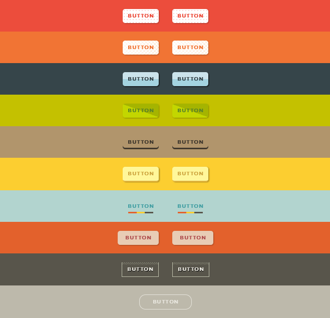
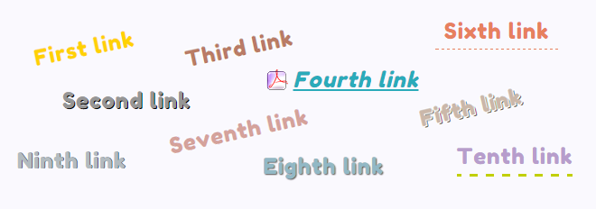

CSS-ссылки
Содержание:
CSS-ссылки содержат свойства, которые отвечают за внешний вид гипертекстовых ссылок HTML-документа. Ссылки представляют собой основной способ навигации по сайту, поэтому применение CSS-стилей для оформления улучшит их визуальное восприятие.
Основной способ оформления ссылок заключается в стилизации подчеркивания ссылки и изменении цвета текста ссылки. Также можно изменить внешний вид курсора с помощью свойства cursor.
Псевдоклассы состояний гипертекстовых ссылок
Большинство браузеров выделяют четыре основных состояния гиперссылок, каждому из которых соответствует свой псевдокласс селектора:
Не посещенная — a:link
Посещенная — по которой уже выполнялся переход — a:visited
Не нажатая — над которой находится указатель мыши — a:hover
Нажатая — которая удерживается мышью — a:active
Используя псевдоклассы для форматирования каждого состояния ссылок, можно дать пользователям подсказки, по каким ссылкам он уже переходил, а по каким — ещё нет, например:
a:link {
color: #497DDD;
border-bottom: 1px dashed;
}
a:visited {
color: #EF7D55;
}
a:hover {
color: #154088;
border-bottom: .07em solid;
}
a:active {
color: #497DDD;
border-bottom: 1px dashed;
}
Форматировать ссылки нужно в указанной последовательности, в противном случае состояние стилей перестанет работать (в силу механизма каскадности).
Выборка отдельных ссылок
Для стилизации отдельных ссылок нужно задать им стилевой класс, после чего можно будет менять внешний вид выбранных ссылок:
<а href="http://kptk.kz" class="kptk">какой-то текст
Подчеркивание ссылок
Удаление подчеркивания:
a {text-decoration: none;}
Добавление подчеркивания только при наведении на ссылку:
a {text-decoration: none;}
a:hover {text-decoration: underline;}
Внешний вид нижней границы ссылки:
a {
text-decoration: none;
border-bottom: 2px dashed DarkOrchid;
padding-bottom: 3px;
}
Изображения для ссылок
Добавить изображение для ссылки можно с помощью CSS-свойства background-image. Так как элемент <а> является строчным a {display: inline;}, то предварительно его нужно преобразовать в блочный элемент a {display: block;}.
Чтобы вставить изображение или иконку перед ссылкой, необходимо добавить отступ с помощью свойства padding-left. Этот прием может пригодиться в случае, когда на странице есть ссылки для загрузки каких-либо документов различных форматов, и вы можете добавить значок-изображение типа файла для большей наглядности.
Если нужно, чтобы значок автоматически добавился ко всем ссылкам, содержащим документы одного формата, можно воспользоваться следующей конструкцией:
a[href$=".pdf"] {background-image: url(images/pdf.png);}
Символ href$ в селекторе атрибута дает браузеру команду найти все атрибуты href, заканчивающиеся определенным образом (в данном случае .pdf) и добавить к ссылке соответствующий значок.
Использование фонового изображения
Можно преобразовать внешний вид ссылки, добавив в качестве нижней границы фоновое изображение:
a {
text-decoration: none;
background: url(images/underline.png) repeat-x left bottom;
padding-bottom: 3px;
}
Ссылки-кнопки
Благодаря свойствам background-color, border и padding, ссылкам можно придать вид прямоугольных кнопок, а, меняя отображение тех или иных свойств ссылок при наведении курсора мыши a:hover, добавить интересные эффекты.
Оформления ссылок
Гипертекстовые ссылки можно оформить различными способами, но основной прием оформления основывается на изменении внешнего вида ссылки при наведении на нее курсором мыши — состояние ссылки a:hover.
